Більшість метрик у цьому тестовому я брав із Semrush. Платного доступу до Ahrefs у мене немає, тому DR дивився в його безкоштовному Website Authority Checker. Зі Semrush я працював уперше, тож десь можуть бути неточності. Щоб їх було менше, дані перевіряв усіма доступними способами: у Google, на самих сайтах, у Collaborator і в листуванні з власниками сайтів.
Аналіз сайтів під аутріч
Проаналізувати сайти під аутріч (тематика просування: AI adult). Дати короткий фідбек по своєму вердикту (чому взяли б або навпаки) і який максимальний бюджет виділили б на обраний сайт.
Щоб бюджет спирався на реальні цифри, а не на мої здогадки, я написав усім десяти донорам. Питав, скільки коштує гест-пост і вставка посилання, який тип лінка і як їм зручніше отримати оплату. Де ціна вже висіла на сайті чи на біржі, брав її звідти. Відповіді донорів додаю скриншотами в картку сайту, щоб було видно, звідки цифра.
- Органіка
- 103.4K/міс
- Частка США
- 58%
- DR
- 71
- Authority Score
- 43
- Ref. domains
- 25.7K
- Ніша
- Celebrity News, Music
Чому
Тематично gigwise від нас далекий: celebrity-новини й тексти пісень. Але сайт живий, трафік іде на тисячі внутрішніх сторінок, а пости про AI girlfriend тут уже стоять, з dofollow-посиланнями та в індексі.
На Collaborator розміщення коштує $199, за особливу тематику доплата $100, і ще $50, якщо текст пишуть вони. Для нашої ніші це $299, але напряму через редакцію зазвичай виходить дешевше, тому моя стеля $250.
Приклади постів у ніші
- Best AI Sexual Chat and Virtual Girlfriend Apps
- AI Girlfriend Video Chat (dofollow на xeve.ai з анкором «AI girlfriend video chat»)
- Secrets AI Review (жовтень 2026, позначено як press release)
Докази
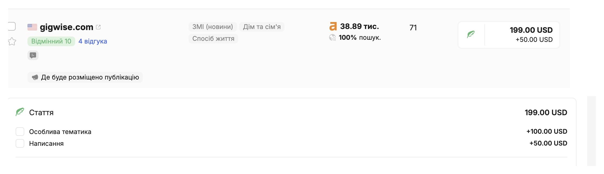
- Органіка
- 501/міс
- Частка США
- 65%
- DR
- 37
- Authority Score
- 25
- Ref. domains
- 4.2K
- Ніша
- Cybersecurity News
Чому
Трафіку в донора мало, і весь останній рік він падає. Те, що лишилось, тримається майже на одній сторінці про шахрайство з prizechecker: якщо вона просяде, у сайту не залишиться нічого.
Гест-пости тут беруть відкрито, нашу нішу вже публікували, а більшість трафіку зі США. Але вага домену зараз не та, щоб за неї платити.
На Collaborator за розміщення тут просять $200, плюс $20, якщо текст пишуть вони. Для домену з таким трафіком це дуже дорого, більше $20 я б не дав. Редакції я теж написав через форму на сайті, відповіді поки немає.
Приклади постів у ніші
Докази
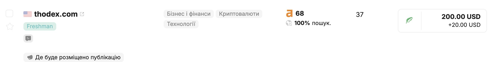
- Органіка
- 16.1K/міс
- Частка США
- 36%
- DR
- 71
- Authority Score
- 39
- Ref. domains
- 23.3K
- Ніша
- Entertainment / Pop Culture
Чому
Nerdbot пише про кіно, ігри й поп-культуру, але нашу нішу тут публікують відкрито: є пости про AI girlfriends, огляди AI-чатів і порівняння Replika з Nomi. В одній зі статей стоять три dofollow-посилання на crushon.ai з анкорами на кшталт «NSFW AI».
Мінус у гео: США на першому місці, але це трохи більше третини трафіку, решта йде з Індії, Великої Британії та інших країн. І трафік скаче: останній ріст дали дві свіжі статті.
Сайт є в моїй базі донорів, розміщення там коштує $50. Що нашу нішу тут беруть, видно з постів вище, але ціна в базі вказана без уточнення тематики, а за sensitive донори часто просять більше. Тому я написав редакції, щоб дізнатися, чи відрізняється ціна саме для нашої ніші. На лист поки не відповіли, я надіслав фоллоуап. Від ціни з бази моя стеля $60.
Приклади постів у ніші
- What's the Deal with AI Girlfriends These Days? (квітень 2025, три dofollow на crushon.ai)
- A Day in the Life with an AI Girlfriend (жовтень 2024)
- The Evolution of Digital Companionship: AI Girlfriends and Beyond (травень 2024)
- Органіка
- 3.5K/міс
- Частка США
- 66%
- DR
- 62
- Authority Score
- 32
- Ref. domains
- 2.9K
- Ніша
- Multi-topic Blog
Чому
Сайту немає в індексі Google. Запит site:disquantified.org не знаходить жодної сторінки, і донор сам написав мені в листі, що їхні сайти не індексуються, а розміщення продаються «для видимості в AI». Посилання зі сторінки, якої Google не бачить, ваги нашому проєкту не передасть, тому ціна тут ролі не грає.
Semrush досі показує кілька тисяч візитів на місяць, але Google сторінок сайту не знаходить, тож ці цифри вже не актуальні.
Тому мій бюджет тут $0: навіть за $40 посилання зі сторінки поза індексом нічого не дасть. Інша справа, якби задачею була поява бренду у відповідях AI-сервісів. Під це вони свої розміщення і продають, тож за $40 можна спробувати, але цитування в AI вони самі не гарантують.
Приклади постів у ніші
Докази
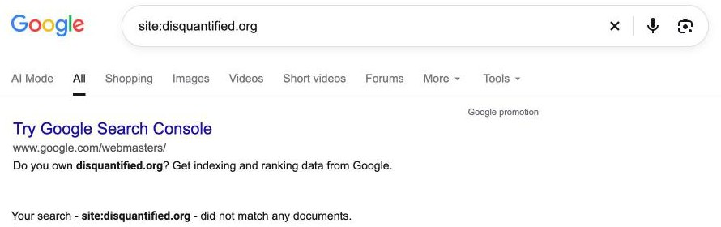
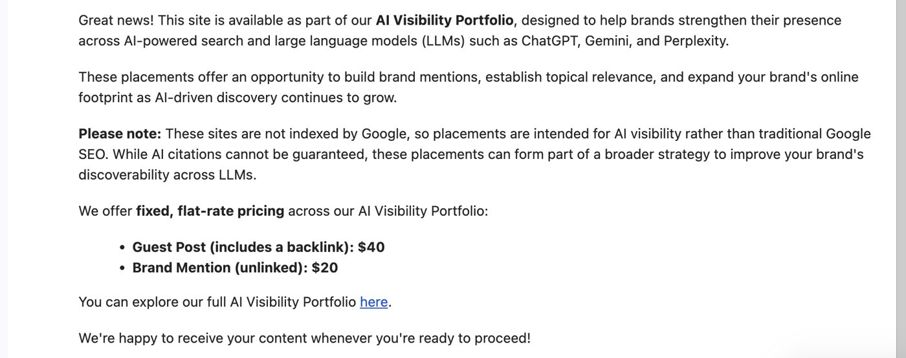
- Органіка
- 824/міс
- Частка США
- 27%
- DR
- 59
- Authority Score
- 28
- Ref. domains
- 15.3K
- Ніша
- PS2 BIOS / Emulators
Чому
PSBios живе з одного запиту: майже весь трафік зі США йде на головну, де люди шукають, як скачати BIOS для PS2. Усі інші сторінки разом, зокрема гостьові статті, дають лише кілька візитів.
Гео теж не наше: на першому місці Бразилія, США тільки друга. А в липні–серпні кількість ключових слів обвалилася в кілька разів і так і не повернулась.
Нашу нішу тут публікують, і на Collaborator розміщення коштує $80, плюс $15, якщо текст пишуть вони. Але більше $20 я б за такий сайт не дав. Редакції я теж написав, на лист поки не відповіли, надіслав фоллоуап.
Приклади постів у ніші
- NSFW Chatbot Development: Building Personalized AI Companions (клон Candy AI)
- Explore the 5 Best Face Swap Tools to Use in 2025 (face swap з NSFW)
Докази
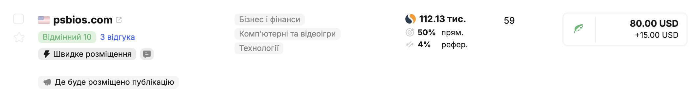
- Органіка
- 10.9K/міс
- Частка США
- 92%
- DR
- 44
- Authority Score
- 36
- Ref. domains
- 5.3K
- Ніша
- Geek Culture / Gaming / Tech
Чому
GeekExtreme пише про ігри, техніку й гік-культуру з 2000 року, і майже весь його трафік зі США. Домен старий і сильний, тож за вагою це один з найкращих донорів у списку.
Нашу нішу тут публікують регулярно, хоч здебільшого в нейтральній подачі: огляди AI girlfriend-апок, порівняння пам'яті й голосу. Є і пряма стаття про uncensored AI-компаньйонів з посиланнями на Candy.ai, тож тема їх не відлякує, але наш текст треба буде писати в їхньому тоні.
Мінус у тому, що майже весь трафік брендовий і йде на головну.
На Collaborator стаття коштує $175, за особливу тематику доплата $100, і ще $25, якщо текст пишуть вони. Для нашої ніші це $275, але напряму через редакцію зазвичай виходить дешевше, тому моя стеля $230. Редакції я написав, відповіді поки немає, надіслав фоллоуап.
Приклади постів у ніші
- The Best & Popular AI Companions Uncensored In 2026 (лютий 2026, dofollow на Candy.ai через партнерське посилання)
- Free AI Girlfriend Apps: We Tested 5 Free Tiers (вересень 2026, dofollow на hakko.ai і nastia.ai)
- AI Girlfriend App With Pictures: What Each Image Really Costs (вересень 2026)
- AI Girlfriend With Voice: 9 Apps Tested
Докази
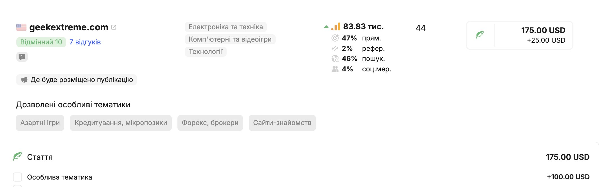
- Органіка
- 1.6K/міс
- Частка США
- 35%
- DR
- 68
- Authority Score
- 30
- Ref. domains
- 6.9K
- Ніша
- Lifestyle Magazine
Чому
Канадський lifestyle-журнал з друкованою версією. Але трафіку зі США в нього мало, і за останній рік загальний трафік сайту падає, а ціни лишились як для живого медіа.
Торгуватися вони не готові, на сторінці прямо написано «Rates are firm». Для мене цей сайт вартий до $60, а для нашої ніші вони просять $800, тож шукати компроміс тут немає сенсу.
Приклади постів у ніші
- How to Choose an AI Romance Companion That Fits (жовтень 2026, SFW)
- Fintech in Online Casino Operations (dofollow на vulkanvegas.com)
- Органіка
- 7.5K/міс
- Частка США
- 37%
- DR
- 39
- Authority Score
- 31
- Ref. domains
- 3.4K
- Ніша
- Adult / Hentai Streaming
Чому
Hentaipulse сам є adult-сайтом: стрімінг хентаю плюс блог, де вже стоять огляди AI-чатів. Для них наша ніша звичайна тематика, а посилання буде поруч із прямими конкурентами: в одному лістиклі понад десять dofollow на candy.ai, crushon.ai і spicychat.ai. Серед донорів, яких я беру, це єдиний adult-сайт, решта мейнстрім, тож профіль посилань лишиться збалансованим.
США на першому місці, хоч це трохи більше третини трафіку, і з літа сайт швидко росте. Але ріст дають сотні однотипних сторінок про OnlyFans-моделей, а такий шаблонний контент Google іноді ріже апдейтами.
Ціни немає ні на сайті, ні на Collaborator, ні на SEOClerks, тож я написав редакції напряму. У відповіді гест-пост коштує $100, посилання dofollow, назавжди і без позначки sponsored. Єдина умова: текст має бути про adult, аніме чи хентай, і наша тема під неї підходить. Доплати за тематику немає, тож моя стеля дорівнює їхній ціні, $100.
Приклади постів у ніші
- Best Hentai AI Chat Apps (понад 10 dofollow на candy.ai, crushon.ai, spicychat.ai та інші)
- AI Girlfriend Without Sign Up (2026): Free Chat Guide (dofollow на topaigirlfriend.co.uk)
- What Is an AI Hentai & How to Choose the Best Hentai AI Chat
- FlirtAtlas AI Rankings and Reviews (огляд одного бренду з dofollow на нього)
Докази
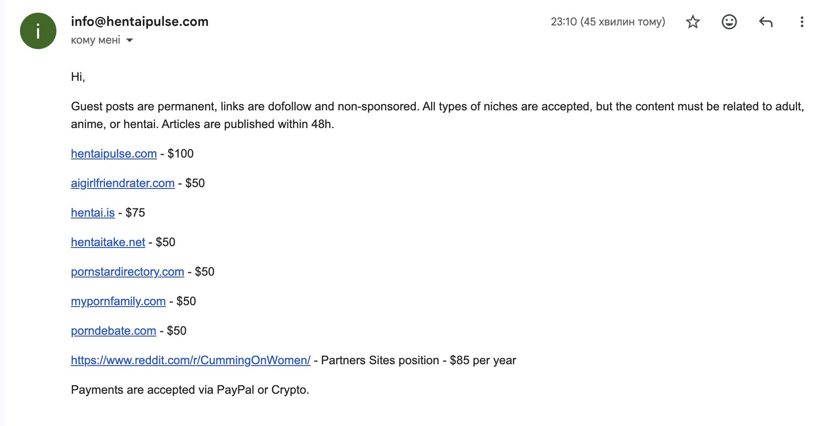
- Органіка
- 3.7K/міс
- Частка США
- 63%
- DR
- 56
- Authority Score
- 33
- Ref. domains
- 7.2K
- Ніша
- Trivia / Facts Blog
Чому
Kickassfacts пише цікаві факти про тварин, історію й відомих людей, тобто тематично від нас далеко. Але сайт живий: трафік розкиданий по сотнях статей, а не тримається на одній сторінці, і більша його частина йде зі США.
Нашу нішу тут уже пропускали: у статті про frame generation стоїть dofollow-посилання на Candy AI. Гостьові пости про онлайн-казино тут теж публікують, останній вийшов кілька місяців тому.
За sensitive-нішу вони просять $280, за звичайну тематику $80. Спершу спробую поторгуватися або запропоную статтю на тему, яка їм ближча, з нашим анкором всередині, щоб зайти дешевше. Моя стеля $250: це трохи нижче їхньої ціни, і на такій різниці зазвичай можна домовитися.
Приклади постів у ніші
- Frame Gen Actually Improves Latency in a Different Way (липень 2025, dofollow на candy.ai з анкором «Candy AI»)
- Best High Volatility Crypto Casino Games for Big Wins (гостьовий пост про криптоказино)
Докази
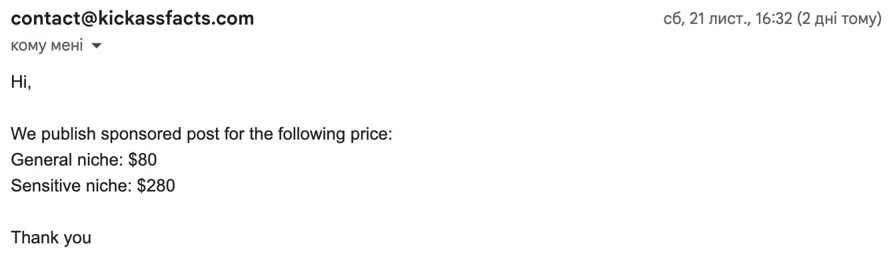
- Органіка
- 28.2K/міс
- Частка США
- 20%
- DR
- 63
- Authority Score
- 37
- Ref. domains
- 12.8K
- Ніша
- Tech & Business News
Чому
За вагою домену tekedia виглядає добре: трафік росте, посилання dofollow і без позначки sponsored, це вони підтвердили в листі.
Зупиняє гео. Наш ринок США, а в tekedia на першому місці Індія, США лише друга, і майже стільки ж трафіку дає Нігерія.
Напряму вони просять $350 за будь-яку тематику, а на Collaborator з доплатою за особливу тематику виходить $448, тож для нашої ніші вигідніше домовлятися з редакцією. Вага домену від гео не залежить, але аудиторія не з нашого ринку робить посилання менш релевантним, тому моя стеля $200.
Приклади постів у ніші
- 9 AI Companion Chatbots With Memory (квітень 2026)
- NSFW AI Image Generators That Don't Hide Behind Fine Print (січень 2026, dofollow на mydreamcompanion.com)
Докази
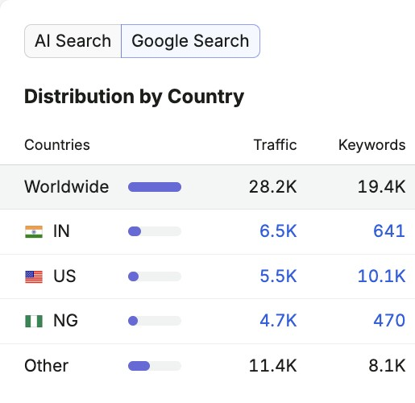
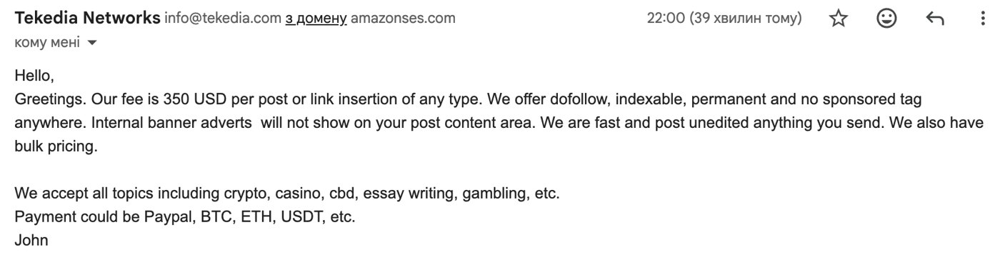
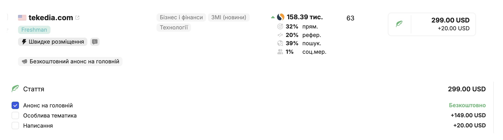
Площадки під гест-пост для dreamgirlai.chat
Знайти 5–10 сайтів, які ви вважаєте якісними та на яких, на вашу думку, було б реально запостити гест-пост для сайту dreamgirlai.chat.
Шукав через беклінки конкурентів. Аналізував їхні беклінки: дивився, які статті на них посилаються, з якими анкорами і на яких сайтах вони вийшли. Для кожного сайту перевіряв, що посилання dofollow, а в Semrush дивився AS, органіку в США і частку США від усієї органіки.
Для кожного сайту в таблиці є сторінка, де приймають пости (Write for Us, реклама або Contact), і приклади вже опублікованих постів.
| Сайт | DR | AS | Органіка US | США, % | Чому підходить | Підтвердження | Приклади постів |
|---|---|---|---|---|---|---|---|
| laweekly.com | 84 | 56 | 67.1K | 47 | Лос-анджелеський міський тижневик про новини, їжу, музику, кіно й культуру, є окремий розділ Cannabis. Багато лістиклів і оглядів у нашій ніші, є навіть окремий огляд DreamGF. Гостьові пости на sensitive-теми теж публікують. | Статті позначені як від гостьових авторів (/guest-author/), а не від редакції. Контакт для розміщення: форма Advertising Inquiry або publisher@laweekly.com. |
|
| brewminate.com | 64 | 41 | 31.9K | 60 | Незалежний сайт про історію та ідеї: найбільша категорія History, також релігія, політика й поточні події. Бере гест-пости в різних нішах: казино, CBD, AI girlfriend. Є окрема стаття про AI girlfriend з dofollow-посиланням на конкурента, без позначки sponsored. | Розділ Sponsored Content, де на сторінці прямо сказано paid collaborations. Гест-пости з посиланнями є і в звичайних розділах. Контакт: форма і email на Contact Us. |
|
| urbansplatter.com | 61 | 35 | 14.2K | 63 | Блог про нерухомість і дизайн з відкритим розділом Blog (Technology, Business, Entertainment та інші). Є стаття про AI girlfriend з двома dofollow-посиланнями на конкурента, без позначки sponsored. | На сторінці Contact запрошують експертів публікувати гест-пости і прямо згадують SEO-вигоди. Контакт: contact@urbansplatter.com. |
|
| psychreg.org | 74 | 37 | 3.5K | 38 | Сайт про психологію і ментальне здоров'я з тегом Cyberpsychology. Є стаття про explicit-фото від AI girlfriend з двома dofollow-посиланнями на конкурента. | Сторінка Write for Us: беруть есе про психологію та ментальне здоров'я обсягом 500–1 000 слів, посилання на джерела дозволені. Пітчі на dennis@psychreg.org. |
|
| livenewschat.eu | 71 | 33 | 3.4K | 71 | Новинний сайт з окремим розділом AI. Є стаття про AI companion з dofollow-посиланнями на конкурента (nectar.ai), без позначки sponsored. | Сторінка Write for Us: беруть оригінальні статті про новини та технології, аналітику та колонки. Пітчі на email редактора: markmasterson777@gmail.com. |
|
| pwinsider.com | 59 | 44 | 25.2K | 53 | Новини про реслінг з великою американською аудиторією. Поруч із новинами виходять матеріали про казино й NSFW AI roleplay. Є стаття про AI girlfriend з двома dofollow-посиланнями на конкурента (nectar.ai), без позначки sponsored. | Окремої сторінки для гест-постів немає. Підтвердження: комерційні пости про казино й AI adult регулярно виходять на сайті. Контакт: сторінка Contact, email редакції daveschererpwi@gmail.com. |
|
| thesource.com | 76 | 48 | 29.6K | 56 | Хіп-хоп журнал про музику, культуру й політику. Публікує матеріали про AI girlfriend і NSFW AI, а також рейтинги казино. Є стаття з трьома dofollow-посиланнями на конкурента (ourdream.ai), без позначки sponsored. | Сторінка Advertise With Us з формою (ім'я, email, сайт, повідомлення), ціни не вказані. Є категорія OP-ED з маркуванням Featured Guest Posts. Рекламний email: advertising@thenorthstargroup.biz. |
|
AS, органіка і частка США з Semrush, DR з безкоштовного Ahrefs Website Authority Checker, листопад 2026.
Розподіл анкорів і посилань у crowd-плані
Опишіть, яким би був ваш підхід до розподілу анкорів та лінків при створенні crowd linkbuilding плану на щойно створений сайт, який має 10 сторінок.
Приклад на s-pro.io (розробка ПЗ для банків і фінтеху). Беру реальний сайт як приклад структури й уявляю, що він щойно запущений. Рахую 40 крауд-посилань за 8 тижнів.
1. Типи анкорів. Для нового профілю більшість посилань роблю на бренд і голий URL: 40% бренд, 30% URL, 25% тематичні, 5% exact. Це робоча схема, у джерелах діапазони різняться.
2. Сторінки. Беру головну і 9 сервісних сторінок. Блог, кейси, about і команду в крауд не беру, бо вони не продають послугу. Головна отримує 40%, решта 60% ділиться за попитом: більше /fintech і /ai-agent-development, менше вузьким сторінкам на кшталт KYC.
3. Анкори і темп. На кожну сторінку 2–3 анкори, чергую їх. Обсяги перевіряю в Semrush: у «fintech software development company» 1,9 тис. пошуків на місяць, а у «AI governance for banks» лише 20, тож він йде запасним. Темп близько 20 посилань на місяць, бо для нового профілю радять 10–30. Майданчики підбираю під готовий план.
1. Розподіл за типами анкорів
| Тип анкора | Частка | Приклади | На які сторінки ведуть |
|---|---|---|---|
| Брендові | 40% | S-PRO, S-PRO.io | Переважно на головну. Це основа профілю. |
| Голий URL | 30% | s-pro.io, https://s-pro.io/fintech | На будь-яку сторінку. Основний варіант для профілів, де анкор зазвичай не поставиш. |
| Тематичні (partial) | 25% | fintech development, AI agent development, banking platform | Не на головну, а на сторінки окремих послуг, наприклад /fintech. Текст беру з таблиці нижче. |
| Exact match | 5% | fintech software development company, legacy system modernization | Тільки на сторінку, яка саме під цей запит, не на головну. Не більше одного на майданчик. |
2. Розподіл за сторінками
| Сторінка | Частка | Анкори на вибір |
|---|---|---|
| Головна | 40% | S-PRO, s-pro.io |
| /fintech | 10% | fintech software development company, financial software development, URL сторінки |
| /ai-agent-development | 10% | AI agent development company, custom AI agent development, AI agents for banks, URL сторінки |
| /core-legacy-modernization | 8% | legacy system modernization, core banking modernization, URL сторінки |
| /digital-banking | 8% | digital banking platform, mobile banking platform, URL сторінки |
| /ai-agents-aml-transaction-monitoring-bank | 7% | AML transaction monitoring, AML compliance automation, URL сторінки |
| /ai-process-automation | 6% | AI process automation, URL сторінки |
| /eu-ai-act-compliant-ai-agents-banks | 5% | EU AI Act compliance, AI governance for banks, URL сторінки |
| /ai-copilots-for-wealth-management-teams | 3% | wealth management AI, URL сторінки |
| /kyc-onboarding-ai-agents-for-banks | 3% | AI KYC, KYC onboarding automation, URL сторінки |
3. Темп і етапи
| Етап | Лінків | Що ставлю |
|---|---|---|
| Тижні 1 і 2 | 8 | Тільки головна: бренд і голий URL. Комерційних анкорів немає. |
| Тижні 3 до 5 | 16 | Додаю внутрішні сторінки: голі URL і тематичні анкори. |
| Тижні 6 до 8 | 16 | Решта внутрішніх сторінок і 2 exact match. Перед цим етапом дивлюся, які лінки проіндексувались. |
4. Правила, яких я тримаюсь
- План складаю наперед: для кожного посилання визначено сторінку і анкор. Майданчики підбираю під план, а не навпаки.
- Типи майданчиків змішую: профілі, сабміти текстів, Web 2.0, форуми, рідше коментарі в блогах. Обираю їх за якістю, а не за тематикою: високий DR, живий трафік, посилання індексується і не видаляється. Доречним посилання робить текст поста чи профілю.
- Один майданчик, одне посилання на сайт.
- На кожну сторінку 2–3 варіанти анкора, і чергую їх у межах цієї сторінки. У профілях анкор часто не поставиш, тому там йде безанкорне посилання, тобто голий URL.
- Не женуся за dofollow: у крауді багато nofollow, і це нормально.
- Веду таблицю: сторінка, майданчик, анкор, тип майданчика, DR, трафік, URL розміщення, статус (розміщено, на модерації, видалено) і чи проіндексовано. Видалені та непроіндексовані замінюю в наступному етапі.
Приклад аутріч-листа вебмайстру
Надати один приклад аутріч-листа до вебмайстрів, який ви зазвичай використовуєте.
Цей лист я надсилав донорам із завдання 1. Він короткий: хто пише, чого хочу і що мені потрібно знати у відповідь. Одразу пропоную два формати, щоб власник сайту вибрав той, який у нього вже є, і не перепитував.
Ціну, тип посилання (dofollow чи nofollow) і спосіб оплати питаю вже в першому листі, бо без цього не порахувати, чи вкладається сайт у бюджет. Назву проєкту і посилання на нього в першому листі не даю.
Тематику в першому листі іноді краще не вказувати. Якщо сайт мовчить після листа з тематикою, незрозуміло, чому: його не влаштовує ніша чи він узагалі не розміщує гостьові пости. Без ніші той самий сайт часто відповідає, що гостьові пости розміщує, і відмовляє вже після того, як я назвав нішу. Тоді в базі видно справжню причину відмови, і залишається простір домовитися. А коли ніша є в першому листі, відмови часто немає взагалі, сайт просто ігнорує, і не зрозуміло, чи це через тематику.
Hi [Site] team,
I represent a website in the AI companion space (an AI chat app for adults), and I'm looking for blogs to collaborate with.
Would any of these formats work for you:
- A guest post or sponsored article on your blog
- A link insertion (niche edit) into an existing article
If any of these options work, could you share your terms: rates and link type (dofollow/nofollow)? Also, which payment method is more convenient for you, PayPal or crypto?
Let me know what works for you.
Best regards,
Pavlo
Фоллоуап
Hi there,
Just following up on my last message — I know inboxes pile up.
If a guest post or link insertion could work on your side, I'd be glad to hear your terms: rates, link type (dofollow/nofollow) and whether PayPal or crypto works better for you.
And if it's not a fit, no worries — just let me know either way.
Best regards,
Pavlo